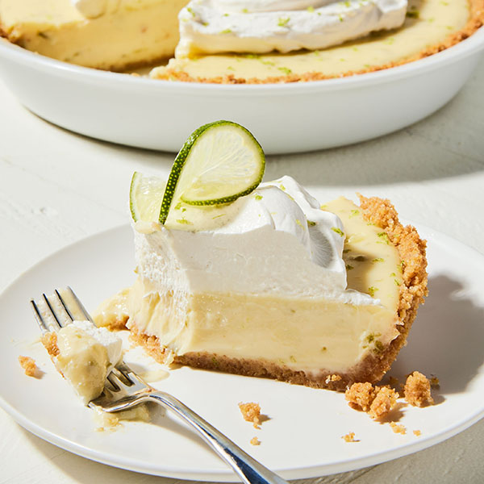

Key Lime Pie
This easy key lime pie recipe is the 1999 American Pie Council's National Pie Championship's 1st place winner in the Quick and Easy Category. If you like, garnish each piece with a slice of lime and a dollop of whipped cream or whipped topping.
Ingredients
- 5 large egg yolks
- 1 can of sweetened condensed milk
- ½ cup of key lime juice
- 1 9-inch prepared graham cracker crust
Steps
- Gather all ingredients.
- Preheat the oven to 375°F (190°C).
- Combine sweetened condensed milk, key lime juice, and egg yolks in a large bowl; mix well.
- Pour mixture into unbaked graham crust.
- bake in the preheated oven until filling is set (about 15 minutes)
- Allow to cool completely before slicing.